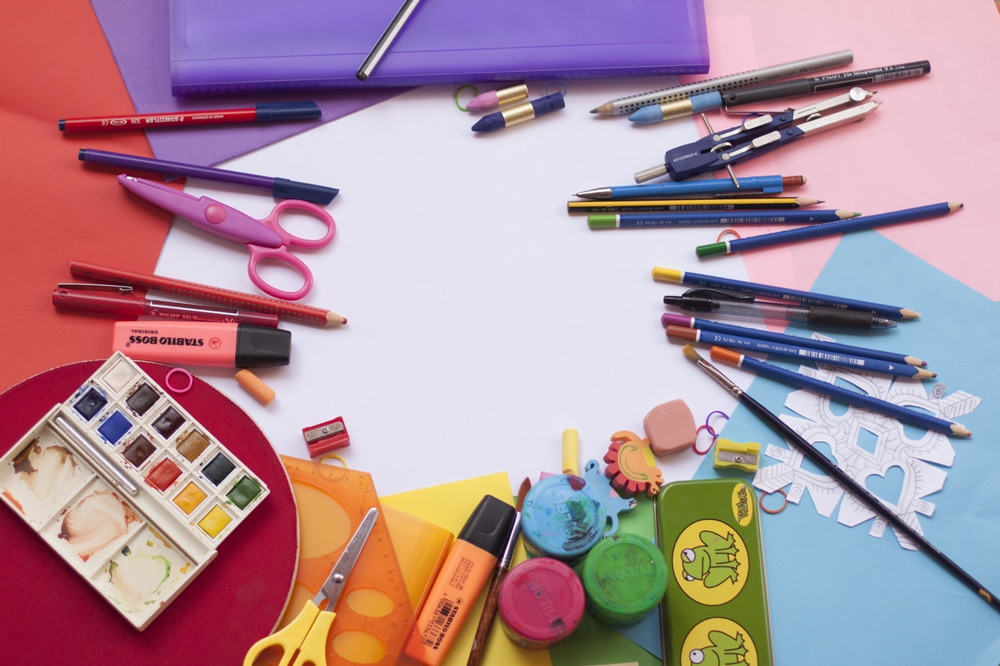
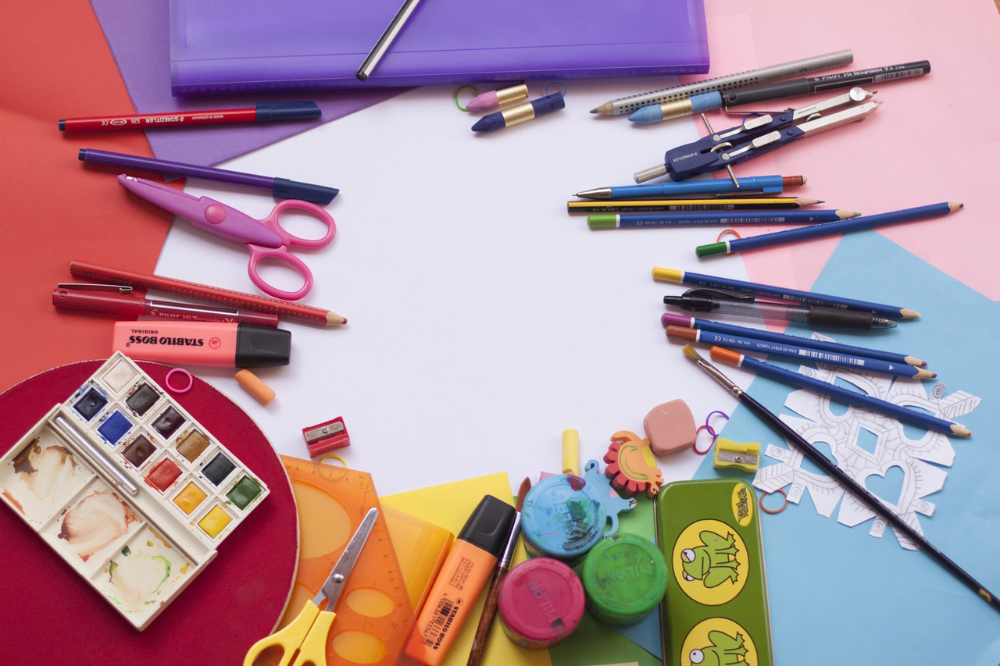

Nuestra Historia
HatioyMultimedia
Los adelantos en la industria de la imprenta han permitido que el mensaje de la Biblia llegue a más personas. Aunque el método de impresión que inventó Johannes Gutenberg cerca del año 1450 no cambió mucho durante siglos, en los pasados doscientos años, la industria de la impresión ha experimentado cambios drásticos. Ahora, las prensas son más grandes, veloces y sofisticadas. La elaboración de papel y la encuadernación son más económicas. Las prensas offset han reemplazado a la impresión tipográfica, por lo que la producción de publicaciones es más rápida y la calidad de las ilustraciones es mucho mejor. ¿Cómo nos han ayudado estos avances? El primer número de esta revista salió a la luz en julio de 1879, y se imprimieron 6.000 ejemplares. No tenía ilustraciones y se publicó solo en inglés. Hoy, 136 años después, se imprimen más de 50.000.000 de ejemplares de cada número. Además, se traduce a más de 200 idiomas y contiene bellas ilustraciones a todo color.
Ha habido otros muchos inventos en los últimos doscientos años que han ayudado al pueblo de Jehová a predicar las buenas nuevas y hacer discípulos. Ya mencionamos el tren, el automóvil y el avión, pero también hemos usado bicicletas, máquinas de escribir, dispositivos braille, telégrafos, teléfonos, cámaras, grabadoras de audio y video, películas, computadoras, la radio, la televisión e Internet. Isaías profetizó que el pueblo de Jehová se alimentaría de “la leche de naciones”, y eso es lo que hemos hecho: utilizar recursos de las naciones, como los avances tecnológicos, para editar Biblias y publicaciones bíblicas en muchos idiomas (lea Isaías 60:16).
Regresa a imprentalioy
HatioyMultimedia

Nuestro equipo
Conoce a nuestro equipo de trabajo
Ariel Lioy
Hacer Publicidad es Crecer
Ariel Lioy
Conoce mas sobre Nosotros...
Ismael Achad
Muestra sus Proyectos
Nuestra clientes
Conoce a algunos de nuestros patrocinadores
